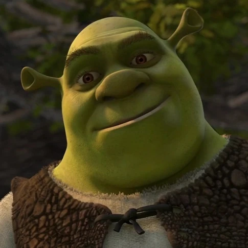
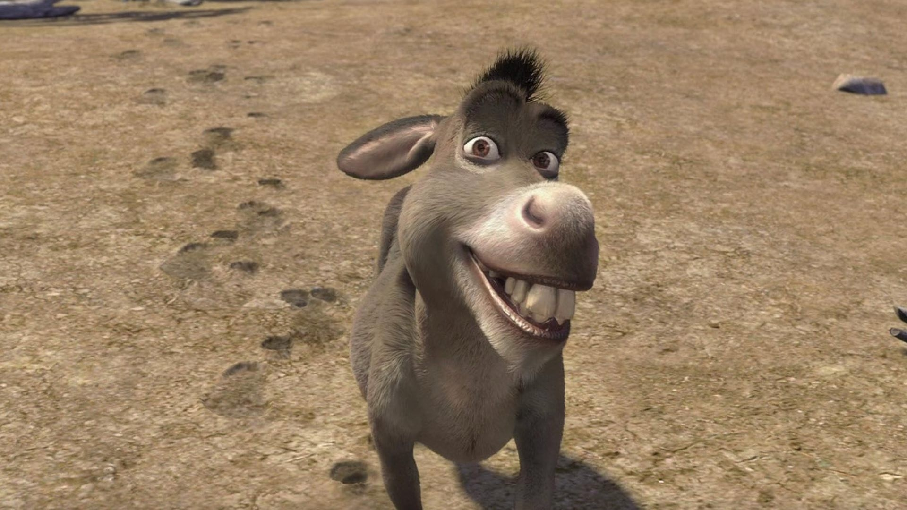
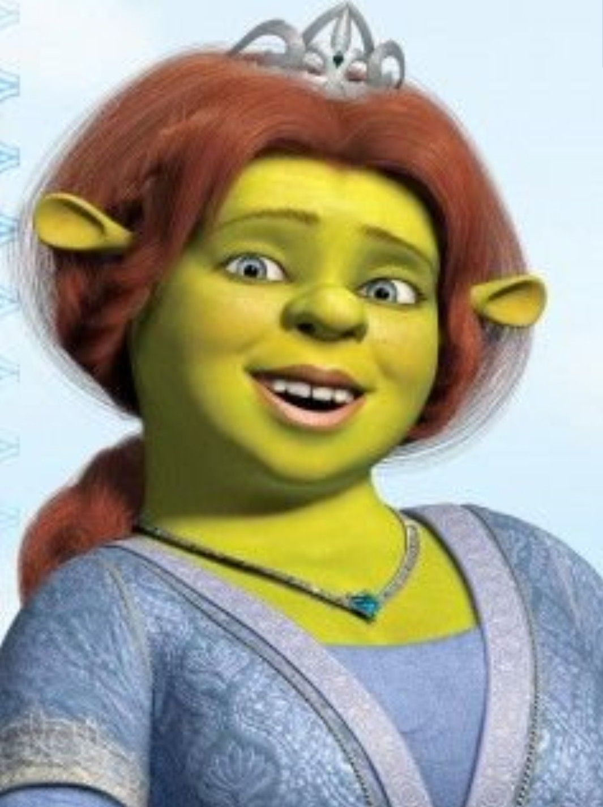
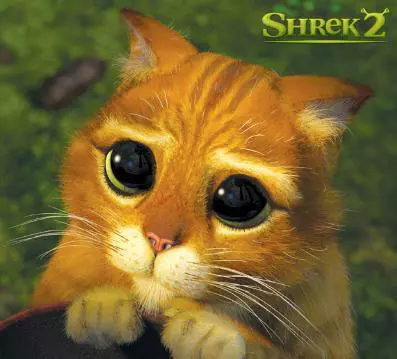

Shrek
Un ogro fuerte pero sensible que al inicio prefiere la soledad, pero descubre el valor del amor y la amistad.

Burro
Extrovertido, gracioso y muy leal. Aunque habla mucho, siempre está ahí para Shrek.

Fiona
Una princesa valiente que lucha contra los estereotipos y demuestra que la belleza está en ser uno mismo.

Gato con Botas
Un espadachín carismático, ágil y valiente que combina ternura con gran habilidad en combate.

Farquaad
Un villano obsesionado con la perfección que representa la superficialidad en los cuentos clásicos.